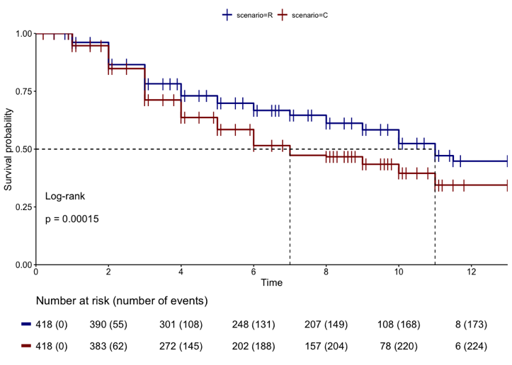
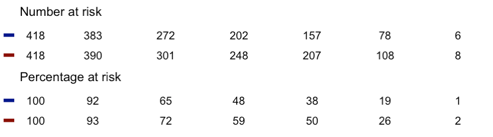
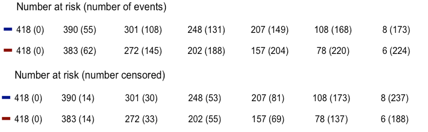
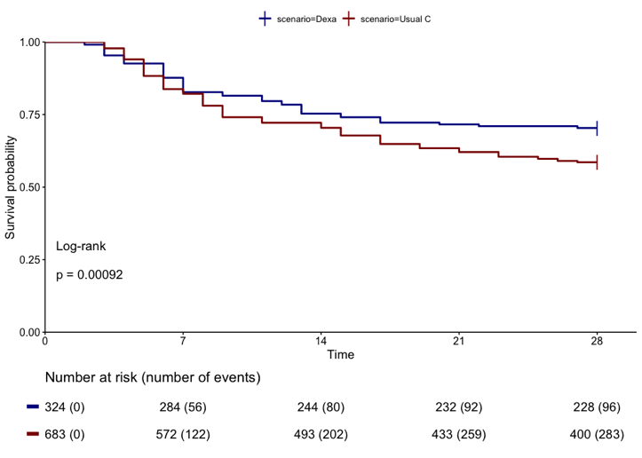
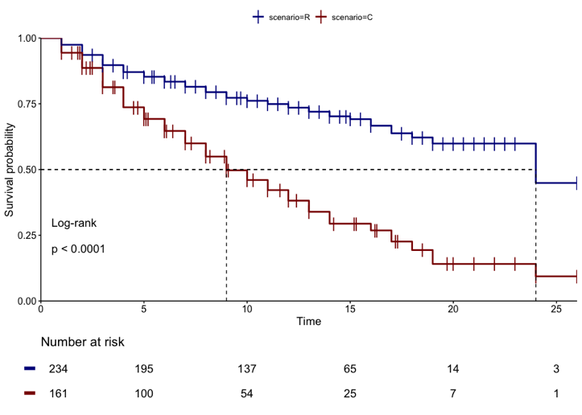
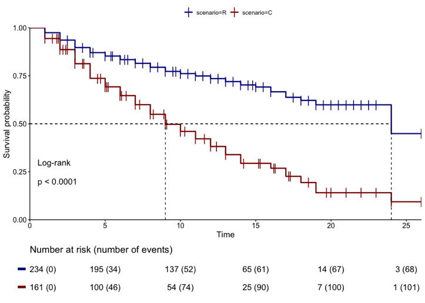

The interpretation of the the Kaplan-Meier curve
Introduction
Why do Kaplan-Meier curves often paint an incomplete picture of reality? A short answer to this is because the accompanying table below the curve omits data that is essential for a correct interpretation. Why publishers of major medical journals allow this is a mystery and a reality in 2020 (1).
The Kaplan-Meier curve gives a picture of the estimated survival over time and this can be calculated by measuring 3 variables,
i.e. the mortality, survivors and people who drop out of the study. For the Kaplan-Meier curve these are: events (deaths),
at-risk / alive (survivors) or censored (early dropouts). In the table below the curve, all these variables should be adressed
and that is not always the case.
The figure below (Fig. 1) shows a Kaplan-Meier curve as an example of a study where no patient
left the study during follow-up. At the beginning of the study all are alive and at the end there are deaths and survivors. The table below
the curve gives a complete picture of reality and there can be no doubt that survival in the
Research (R) group (red curve) is better than in the Control (C) group (blue curve). The data in the table is based on an article published in 2014, when there would be no dropouts during the
study (2).
Fig. 1. KM curve with no censored data.

Fig. 1. Kaplan-Meier curve in a setting where no individual left the study before the end of the follow-up period. At the end of the study there are survivors and deaths. There are no drop-outs. The table below the plot gives a complete picture of the reality.
Censored patients
Fig. 2 shows the Kaplan-Meier curve of the study, taking into account study dropouts (2). The measured mortality in both groups is identical to that in the first figure (table below the curve), except that a notable difference in survivors is seen at the end of the study. If we only look at the curves, we see as differences that the median survival rate of 9 years in the control group has shifted to 7 years (Fig. 1-2). In addition, the vertical markers (censor markers) of the people who leave the study are shown. The entire staircase structure for control and research group has decreased slightly across the entire width.
Fig. 2. KM curve with censored data.

What can the reader conclude from the Kaplan-Meier curve of Fig.2?
Is the survival rate in R (Research group) better than in C (Control group) as in Fig. 1?
No, at the end of the study, in contrast to the first situation, the survival is 8 versus 6,
(p = ns) while the survival is 245 versus 194 (p= 0.001) (Fig-1).
The numbers of patients who left the study before the end cannot be found in the table below the curve.
One can only conclude that the measured mortality during the study is smaller in the R group (173) than
in the C group (224). At the end of the study, this does not provide any benefit because there is no
significant difference in survival in either group. The numbers of individuals,who prematurely stopped the study
is not shown in the table below the curve.
Unfortunately, the table below the curve does not represent the complete data, which is mandatory to properly understand what is going on in the study.
Table under the curve
cumulative survival (absolute number of survivors) table
cumulative survival and cumulative mortality table
cumulative survival and sumulative censored table
cumulative percentage life table
Table 1. Cumulative survival tables.

Table 1 shows the combined cumulative survival and percentage tables of the study in Fig. 2, which gives an incomplete picture of the reality.
Table 2. Cumulative mortality and cumulative censored tables.

Table 2 shown the combined cumulative mortality and censored tables of the study in Fig. 2. When there are no censored patients during the study, at least the cumulative mortality should be shown. In studies where patients have left the study before the end of follow-up, the cumulative mortality and the cumulative censored data should be included in the table.
Covid-19 and Dexamethason therapy
The authors prospectively randomized the value of dexamethasone treatment in hospitalized patients with Covid-19. We limit ourselves to patients who undergo invasive mechanical ventilation (MV) (4). They report in their paper that a total of 6425 patients were enrolled in the study and that 0.1% of patients did not obtain full follow-up to the end of the study due to the predetermined data cutoff. So there are hardly any patients who get out early: at the start of the study all are alive and at the end there are deaths, survivors and a negligible (0.1%) number of early discontinuation. FIG. 3 shows the dexamethasone curve reproduced for the MV group.
Fig.3. Kaplan-Meier curve of the Deaxamethason trial in Covid-19.

The table below the curve gives a complete picture of reality and there can be no doubt that survival in the dexamethasone group is better than in the usual therapy group for patients undergoing MV (N = 1007). Of the 324 patients in the dexamethasone group, 228 survived the first 28 days and 96 patients died (96/324 = 29%). The survivors (228) and the deceased (96) together form the original group of 324 patients. In the control group (683), 283 patients died and 400 were alive after 28 days. I.e. 283/683 = 41% died. Here too, the survivors (400) and deceased (283) together form the total control group of 683 patients (chi square p=0.003) There is therefore no censored patient in the MV subgroup and there is no uncertainty about the correct interpretation.
Covid-19 and Anticoagulant drug therapy
The second article (5) is an example of how it should not be done. The researchers investigate whether prophylactic treatment
with anticoagulants (AC) improves the prognosis of patients admitted to hospital with Covid-19.
They concluded that this is the case for the group undergoing invasive MV in the ICU. The group undergoing MV
with AC prophylaxis is 234 patients and the control group is 161 patients. Again, the MV curve in Fig. 4 is a reconstruction
based on a chosen mortality distribution over time and is therefore not an exact copy of the figure in the article (5).
Fig. 4. Kaplan-Meier curve of the AC trial in Covid-19.

Looking at the curve alone (Fig. 4), one might get the impression that the mortality in the AC prophylaxis group (blue curve) undergoing mechanical ventilation (Ac-MV) (research group N = 234) is less than the mortality in the red curve (noAC-MV) without prophylaxis (control group N = 161). But is that really the case? The table below the curve contains , data on survivors only. Data on mortality and drop-outs are not shown. In the article itself, the authors report a mortality of 29.1% in the AC-MV group and 62.7% in the control group (noAC-MV), this means 68 deaths in the AC-MV group and 101 in the no-AC-MV group.
Fig. 5. Kaplan-Meier curve with cumulative event table

Fig. 5 shows the mortality rate in both groups: 68/234 in the blue curve (AC-MV group) and 101/161 in the red curve (naAC-MV group)
Given the cumulative mortality data and the cumulative survival data, the number of censored individuals can be calculated.
The censored group in the AC-MV group equals 163 (234 - 68 - 3) and 59 (161-101 - 1) in the noAC-MV group. A dataset was reconstructed, where mortality and censored data were
randomly divide over the presented time-intervals in the original paper. The curves here presented are therefore not a copy of the original work,
but a reconstruction given the original data. Now, the table contains all the data to correctly interpret the study and the conclusion is unambiguous (Fig. 6).
Fig. 6. Kaplan-Meier curve with cumulative censored table
The table below Fig. 6 shows that there are 163 patients censored in the AC-MV group and 59 in the noAC-MV group. Based on the tables under the curve in Fig.5 and Fig.6 we can conclude that the measured death rates do not reflect reality: 68/234 in the AC-MV group (blue curve) and 101/161 in the noAC-MV group (red curve). More than half of AC-MV group were censored before the end of the study of 28 days (163/234) and 59/161 were censored in the noAC-MV group (red curve).In the worst case, (all censored patients die before the end of the study). in the AC-MV group 234 -3 = 231 would have died and in the noAC-MV group 161-1 = 160.
In the optimistic case, that none of the censored group would have died during FU, we would count 68 deaths in the AC-MV group and 101 deaths in the noAC-MV group.
Therefore - due to the number of censored individuals - it is impossible to determine that the strategy followed in group AC-MV yields a better prognosis than the standard therapy followed in group noAC-MV.
Summary
Kaplan-Meier curves can be misleading to the reader if the table below gives an incomplete picture of reality. Misinterpretation of the curve can be avoided by including cumulative survival, cumulative mortality and cumulative censored patients in the table.
References
1. Morris TP, Jarvis CI, Cragg W, et al. Proposals on Kaplan–Meier plots in medical research and a survey of stakeholder views: KMunicate. BMJ Open 2019;9:e030215. doi:10.1136/bmjopen-2019-030215
2. David P Dearnaley, Gordana Jovic, Isabel Syndikus et al. Escalated-dose versus control-dose conformal radiotherapy for prostate cancer: long-term results from the MRC RT01 randomized controlled trial. Lancet Oncol 2014; 15: 464–73. Published Online February 26, 2014 http://dx.doi.org/10.1016/S1470-2045(14)70040-3
3. R-statistical software : version 3.5.3 (2019-03-11) -- "Great Truth" Copyright (C) 2019 The R Foundation for Statistical Computing Platform: x86_64-apple-darwin15.6.0 (64-bit)
4. The RECOVERY Collaborative Group. Dexamethasone in Hospitalized Patients with Covid-19 – Preliminary Report. NEJM 2020; DOI: 10.1056/NEJMoa2021436
5. Ishan Paranjpe, BS, Valentin Fuster, MD, PhD, Anuradha Lala, MD et al. Association of Treatment Dose Anticoagulation with In-Hospital Survival Among Hospitalized Patients With COVID-19. JACC 2020:76; 122-9.
Acknowledgement
I would like to express my special thanks to Ruben van Paemel. Kaplan Meier curves: an introduction.